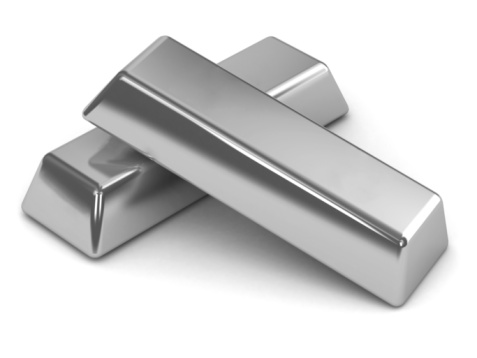

Silver
- Guld
- Silver
- Koppar
- Tenn
- Guld
- Silver
- Koppar
- Tenn
| Guld | Silver | Koppar | Tenn |
|---|---|---|---|
| 1 | 2 | 3 | 4 |
| 1 | 2 | 3 | 4 |
| 1 | 2 | 3 | 4 |
| 1 | 2 | 3 | 4 |
| 1 | 2 | 3 | 4 |
Fakta
Silver (latinskt namn argentum) är ett metalliskt grundämne som tillhör gruppen ädelmetaller, och gruppen myntmetaller. Metallen används ofta till smycken. Det används också som elektrisk ledare där mycket höga krav på låg resistans krävs, exempelvis till inneslutning av supraledande material i de största elektromagneterna. Tanken är att om kylningen av supraledaren fallerar så att supraledningen upphör, så ska de mycket stora strömmar det är frågan om kunna gå genom silvret istället utan att ge så höga temperaturer att ledarna smälter. Detta eftersom silver lär ha den lägsta resistansen av alla icke-supraledande ämnen vid tänkbara temperaturer. Silver har också en mycket hög värmeledningsförmåga. Silver är godkänt som färgämne i livsmedel, med E-nummer E 174. Den kemiska beteckningen Ag kommer av argentum, det latinska ordet för silver (betyder även pengar). Silver är idag (24 juni 2014) värt cirka 4,56 kr/g, eller 21,12 $/oz. En oz (troy ounce), som ädelmetaller ofta mäts i, är 31,103 476 8 g.[1]